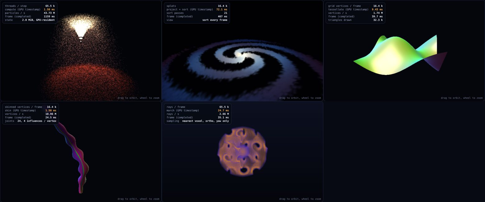

Five X3D features, computed on the GPU
A ParticleSystem, a Gaussian splat cloud, a NURBS patch, an HAnim skin and a volume, each driven by the same field names the X3D fixture uses and each checked against an independent CPU implementation. Move the sliders: the per-frame arithmetic runs in WGSL compute shaders, the state stays in GPU memory, and the numbers in the HUD are GPU timestamps, not frame counters.
What the measurements on a software GPU already say
These come from receipts/full-swiftshader.json (Chromium 153.0.8010.12, SwiftShader on a 4-core Xeon, no GPU). The point of the cards is the method, and what had to be measured differently; absolute speed needs a real GPU, and the next section gives you the button.
Run the repo's gate on your GPU
The correctness gate is the same code that produced the receipt: each kernel against its CPU twin, tolerances in the receipt. The benchmark takes about a minute and fills the right-hand column with your adapter's numbers. Nothing is uploaded; the receipt downloads as a file.
This browser has no WebGPU adapter
The page needs navigator.gpu and an adapter. Chrome and Edge 113+ on a supported GPU have it; on a Windows machine whose GPU Chrome blocklists, chrome://flags/#enable-unsafe-webgpu may help. Pictures from the headless software-GPU rig the receipts were taken on:
